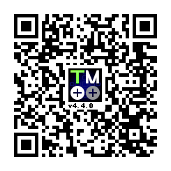

eCDP Help Page
Here is some info to help get everyone started
----------HOW TO GET CONNECTED TO THE ONLINE RANKINGS----------
1) Login as a manager like normal
2) Click "MGR Mode". this should be in the lower left hand corner of the main menu
3) Choose "Wifi Network"
4) Click The Second Option
5) Change the option to "OFF"
6) Click the button on the bottom left to save the settings
7) Click the option with the DS Icon
8) Click the big blue button
9) Set up a wifi like normal. Since the DS is old it requires an unprotected (no password) WIFI network to connect successfully
10) Once the wifi is set up correctly go back to the menu where you can see all your connected WIFI networks
11) Click the blue button on top of your connected WIFI network
12) Scroll down all the way and change the option that contains the words "DNS"
13) Scroll Down farther and set the "Primary DNS" to: "164.132.44.106"
14) Set the "Secondary DNS" to either "1.1.1.1" or "8.8.8.8". if one doesnt work try the other
15) Save Your Settings
16) Now exit the WIFI menu all the way (even in eCDP until your back at the main menu with the 4 options)
17) Go back to the Wifi Network menu in "MGR Mode" and select the button with the DS Icon on it
18) Keep Clicking the top option until you get to a menu with a few animations
19) If it fails then re-check the steps or switch the secondary DNS
20) YOUR DONE! Now reset the game and login as a Crew Member (Not Manager)
21) You can go to "My History"
22) Select you're Crew Member's name
23) Select the button at the bottom that contains the text "eCDP"
24) THERE YOU GO! THERE ARE THE ONLINE LEADERBOARDS!!!
----------HOW TO PLAY GAME ON PC/MAC----------
2) Get the .nds and .sav from the Archive.org link (this can be found in #info on the eCDP Community Discord server aswell as Nick Robinson's Video)
3) Install/Open DeSmuME
4) Select the foler icon in the top right corner
5) Select your eCDP .nds file wherever you put it on your PC
6) Select "File" (not the icon) in the top right hand corner of DeSmuME
7) Select "Import Backup Memory"
8) Select your .sav file for eCDP you got from the archive.org
9) YOU'RE DONE! All you have to do now is get past the password screen using the deafult passcode (482500)
----------HOW TO USE THE ENGLISH TRANSLATION OF THE GAME----------
1) Get the translation's ".xdelta" file. Different .xdelta files can be found all over the internet so pick which one suits your needs
3) Extract xDelta UI's zip file, etc.
4) Open xdeltaUI.exe
5) Ensure you are on the "Apply Patch" tab on xdelta UI
6) For "Patch" select the translation's ".xdelta" file
7) For "Source File" select the original rom's .nds file you got from archive.org. Keep in mind that this must be the original file, files that have already been patched using xdelta can not be patched again
8) For "Output File" select a folder you would like the patched .nds file to appear in
9) Wait for it to load and YOU'RE DONE!
10) You can open your new .nds file in the emulator of your choice
11) Remember to import a .sav file. A Japanese .sav file will work just fine for the English Translation so dont worry about any compatibility issues
----------HOW TO PLAY THE GAME ON A 3DS (Requires a working camera on your 3ds)----------
1) Insure your 3DS is homebrewed
2) Open up "FBI" on your homebrewed 3DS>
3) Once FBI is open select "Remote Install" on the menu
4) Select "QR Code" and Scan the QR Code Below

5) Let it install
6) Once it has successfully installed close "FBI"
7) A new "TwilightMenu++ Updater" should show up on your home screen. If not try rebooting your 3DS
8) Open "TwilightMenu++ Updater"
9) Select "Release" next to "TWLMenu++" and let it install. This might take awhile
10) Select "Release" next to "nds-bootstrap"
11) YOU'RE DONE! You can now put your sd card in your pc and open up the "roms" folder in your sd card's root and place your .nds in the "nds" folder
Note: remember to put your saves aswell in the "saves" folder located inside the "nds" folder